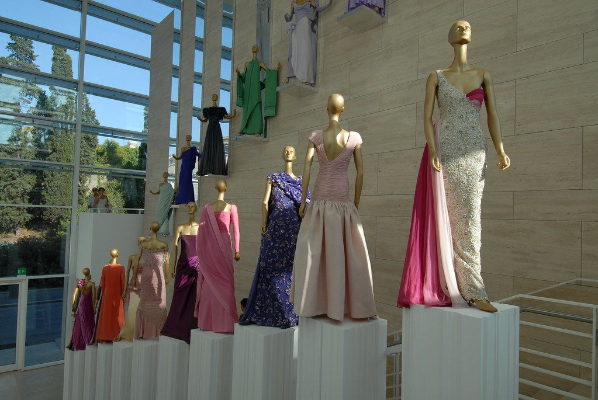

Uzun abiye
Yere kadar uzanan etekler: balık, A kesim ve prenses formları. Gece davetleri, düğün ve balo için ilk akla gelen seçenek. Saten, krep ve payet bu kategoride sık görülür.
Ana sayfa · Koleksiyon
Uzun abiyeden nişanlığa, mezuniyetten düğün davetlisine. Aşağıdaki şeritler mağazada sorabileceğiniz başlıca kategoriler; her birinde hangi kumaşın, boyun ve rengin öne çıktığını kısaca anlattık.
Modeller ve renkler sezona göre değişir. Gördüğünüz bir kategori için güncel seçenekleri sormanın en kısa yolu WhatsApp; Instagram hesabımız @laraabiyeonline da fikir verir.
Yere kadar uzanan etekler: balık, A kesim ve prenses formları. Gece davetleri, düğün ve balo için ilk akla gelen seçenek. Saten, krep ve payet bu kategoride sık görülür.
Diz hizasından baldır ortasına kadar. Kokteyl, söz ve gündüz davetlerinde hareket rahatlığı sağlar; topuklu ya da alçak ayakkabıyla dengelenir.
Gelin adayları için pudra, şampanya, lila gibi açık tonlar; tül, saten ve dantel dokular. Uzun ya da midi, ailenizin gecesine göre.
Kep töreninden balo gecesine. Canlı renkler, saten ve payet; dans edeceğiniz için etek bolluğu ve topuk birlikte düşünülmeli.
Gece boyu rahat, gelinin rengine saygılı modeller. Beyaz ve krem gelinliğe bırakılır; kınada kırmızı çoğu zaman gelinin rengidir.
Uzun kol, yüksek yaka ve dökümlü kalıplar; kış davetlerinde de rahat. Mağazadaki güncel kapalı modelleri mesajla sorabilirsiniz.
Büyük beden abiye ve davet kıyafetleri. Kesim bulucu, silüet notları ve prova hareket testi kendi sayfasında.
Elbiseyi tamamlayan parçalar. Mağazadaki güncel aksesuar seçeneklerini sorun; nasıl eşleştirileceğine aşağıda değindik.
Çizimler temsilidir; mağazadaki modelleri birebir göstermez. Şeride dokunun ya da üzerine gelin.
Kıyafet kodunu ya da davetin türünü seçin; boy, kumaş, renk ve aksesuar için genel bir çerçeve çıkaralım.
Abiyede kumaş, elbisenin nasıl döküleceğini, ışıkta nasıl görüneceğini ve gece boyu ne kadar rahat edeceğinizi belirler.
Parlak yüzey, ağır ve akışkan döküm. Akşam ışığında zengin görünür.
İpucu: Buruşmaya yatkındır; askıda saklayın, ütüyü tersten düşük ısıda yapın.
Hafif, yarı saydam ve uçuşan. Çoğu zaman astarlı ya da kat kat kullanılır.
İpucu: Yaz ve gündüz davetlerinde serin tutar; takılara takılmamasına dikkat edin.
Mat, hafif tanecikli yüzey. Kalıbı iyi taşır, sade kesimlerde şık durur.
İpucu: Kolay buruşmadığı için uzun gecelerde ve yolculukta rahattır.
Yumuşak tüylü, derin renkli. Kış davetlerinin sıcak seçeneği.
İpucu: Buharla tazeleyin; tüyün yönüne göre renk açık ya da koyu görünebilir.
File yapısında, hacim veren kumaş. Prenses etek ve katlı modellerde kullanılır.
İpucu: Altında astar bulunur; yüzük ve saat takılmalarına dikkat edin.
Desenli ve zarif. Çoğunlukla astarla, kol ve yaka detaylarında görülür.
İpucu: Etiketteki bakım talimatına uyun; elde ya da hassas programda yıkanır.
Işığı yansıtan pullar. Gece davetleri ve balo için gösterişli bir seçim.
İpucu: Ağırlığı yüzünden askıda sarkabilir; katlayarak, arasına kâğıt koyarak saklayın.
Sert, ince ve şeffaf; hafif parlak. Hacimli etek ve kol detaylarında kullanılır.
İpucu: Buruşursa ütü yerine buharla düzeltin.
Kumaş dokuları bu site için çizildi; gerçek kumaşın rengi ve parlaklığı farklıdır.
Bir renge dokunun; elbise o tona bürünsün, hangi davette nasıl durduğunu okuyun.
Gece davetlerinin klasiği; takıyla kolayca canlanır. Akşam düğünlerinde sorunsuzdur, gündüz davetinde ise ağır durabilir.
Siyaha yumuşak bir alternatif; gündüz de akşam da şık. Gümüş ve inci takıyla iyi anlaşır.
Sonbahar ve kış davetlerinin rengi. Altın takı ve şampanya tonlu bir çantayla sıcak bir görünüm verir.
Kına ve gece davetlerinde iddialı ama zarif. Altın detaylarla parlar.
Nişan ve söz için sevilen tonlardan; gündüz ışığında yumuşak durur, fotoğrafta tenle güzel birleşir.
Işıltılı ve sıcak. Düğünde davetliyseniz gelinliğe yakın görünmemesi için parlaklığı ve tonu dikkatle seçin.
Bahar ve yaz davetlerinde taze bir seçim; kına gecelerinde de sık görülür.
Gecenin en dikkat çeken rengi. Kına gecesinde gelinin rengi olabildiğinden davetliyseniz önceden sorun.
Metalik ve modern; saten ya da payetli yüzeylerde gece ışığını taşır.

Temsili görselFotoğraflar fikir versin; asıl karar provada verilir. Gelmeden önce yazarsanız bedeninize uygun modelleri sorup gelebilirsiniz.
Temsili görsel · Fotoğraf: emilio labrador, CC BY 2.0
Aksesuar elbiseyle yarışmamalı, onu tamamlamalı. Genel birkaç eşleştirme notu:
Salonlar serin olabilir. Elbiseden bir ton açık ya da koyu, aynı parlaklıkta bir şal seçin; payetli elbisede mat şal dengeler.
Gece davetinde küçük ve sert bir çanta yeter: telefon, ruj, anahtar. Elbise desenliyse çanta düz olsun.
Yaka işlemeli ya da kapalıysa küpeyi öne çıkarın; açık yakada kolye. İkisi birden iddialı olunca biri sönük kalır.
Uzun abiyenin boyu ayakkabıya göre ayarlanır. Provaya o gece giyeceğiniz topukla gelin; dans için yedek bir alçak ayakkabı düşünün.
Etkinliği, tarihi ve bedeninizi yazın; güncel modelleri konuşalım.